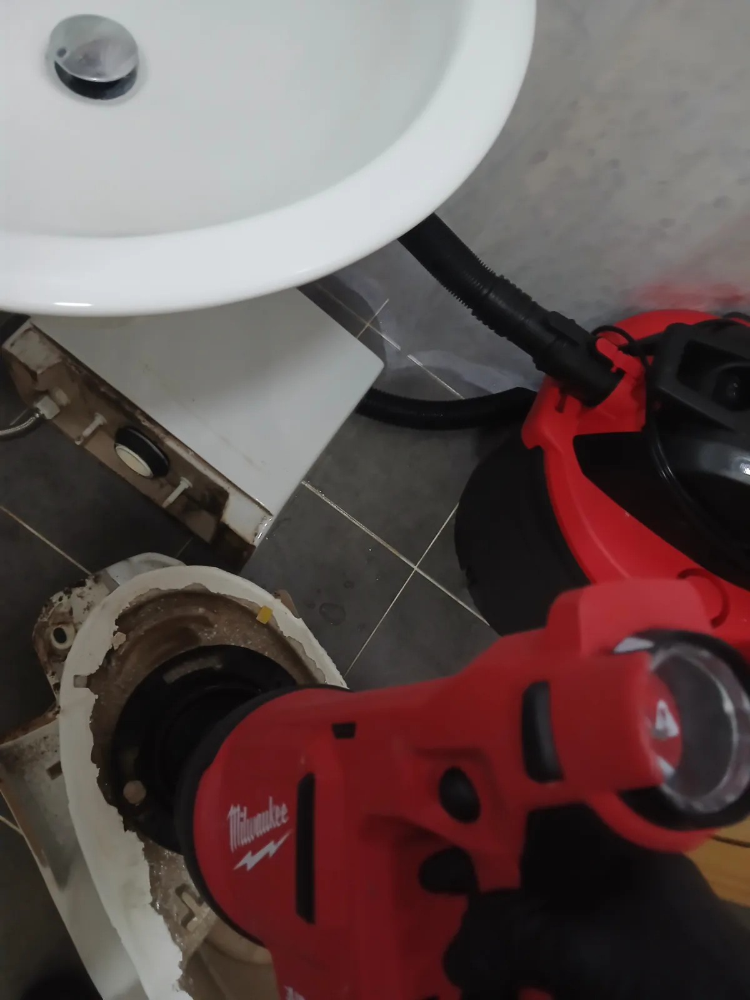

용인 수지구 풍덕천동 변기막힘, 석션 후 변기 탈거까지 단계별 작업
용인시 수지구 풍덕천동 변기막힘 현장에서 석션 작업부터 진행한 뒤 증상에 맞춰 변기를 탈거하고 하부 오수배관까지 단계적으로 점검·작업한 사례입니다.
경기 · 용인시
신라건축설비가 용인시에서 직접 진단하고 해결한 실제 작업 기록입니다.

용인시 수지구 풍덕천동 변기막힘 현장에서 석션 작업부터 진행한 뒤 증상에 맞춰 변기를 탈거하고 하부 오수배관까지 단계적으로 점검·작업한 사례입니다.

반복되는 회사 화장실 악취의 원인을 배관 내시경으로 점검한 결과, 소변기 배수관이 바닥 하수배관에 연결돼 유가 하부까지 요석이 쌓인 구조적 문제를 확인했습니다.

용인 수지구 풍덕천동 변기막힘 현장에서 배설물과 토사물로 추정되는 오물로 막힌 변기를 전문 장비로 관통하여 정상 배수를 복원했습니다.